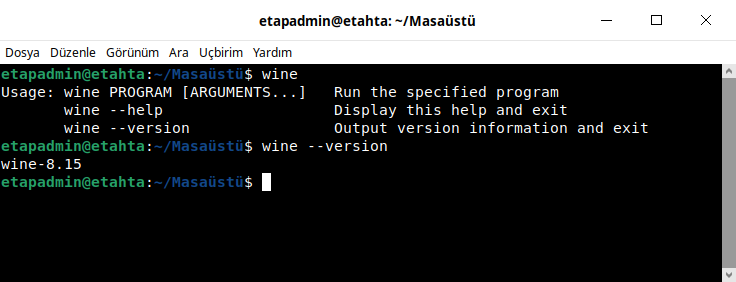

z Kitap Hata Ayıklama¶
wine üzerinden çalışan exe uygulamalar her zaman istenildiği gibi çalışmayabilir. Bu hataların bir çok sebebi olabilir. Bu hataları tahmin etmek elbette zordur. Hataları bulmak için yapılan işlemlere hata ayıklama denir.
Hata Ayıklama¶
Hata ayıklamak için terminali kullanacağız. Bu örnekte kalem.exe dosyası kullanılacak.
Bu sayfadaki bilgileri kullanarak çözüm bulamassanız zkitap analiz parogramı(binwalk) ile test ediniz.
Z kitaplarda sorunsuz çalıştırmak için windows sürümlerini tercih ediniz.
Pardus ve etap sürümleri sadece z kitabın paketlendiği imaj üzerinde çalışacaktır.
Bundan dolayı farklı imajlarda çalışmamaktadır.
Wine Kurulumu¶
wine kurulmuş mu? Öğrenmek için;
wine
wine --version
Eğer hatasız bir şekilde kurulu ise versiyon numarasını verecektir. Alttaki resimde wine kurulu ve versiyonunu öğrendik.
{kind=link}
Wine Hazırlanmış Mı?¶
wine eğer özel bir ayar yapılmamışsa otutum açtığınız ev dizininde .wine dizinine ayarlar. .wine dizini o kullanıcıya ait bilgileri barındırır. Eğer diğer kullanıcılarında kullanmasını istersek ev dizini dışında bir dizine .wine dizini oluşturmak ve paylaştırmka gerekir. Aşağıdaki resimde ev dizininde .wine dizini olduğunu görüyoruz. Eğer yoksa bir exe dosya çalıştırınca ev dizinine oluşacaktır.
ls ~/.wine
{kind=link}
Wine Kitap Çalıştırma¶
Terminalden çalıştırınca birçok hata ve çıktı verecektir. Exe uygulamamız çalışsa bile birçok çıktı verecektir. Eğer hata varsa onlarıda göreceğiz. Eğer hata görüyorsak artık çözümünü araştırabiliriz. Aşağıda exe dosya çalışınca oluşan çıktıyı görmekteyiz.
wine /usr/bin/kalem.exe
{kind=link}